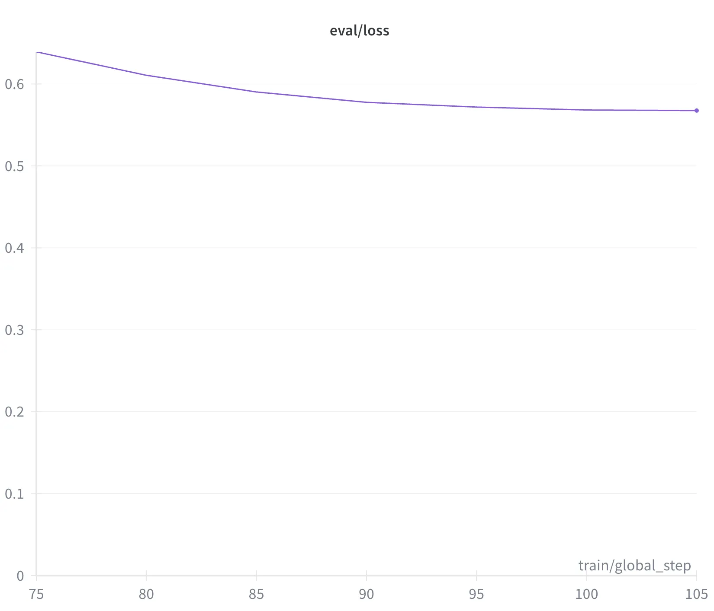

creating a new query language
Background
A few months ago, I joined Clado as a software engineer. My internship has since ended, but I wanted to share a bit about one of my contributions to clado’s people search engine, which performs better than all competitors on pearch.ai’s sourcing benchmark.
As a primer: Our search is criteria based, and users can search through 100+ fields across 1B+ profiles in a single query. We achieve this at scale by decomposing the search problem into two subproblems:
- generating a database query based on the user’s input
- filtering returned profiles in parallel using large language models.
This will be about the first part
Around 1 week in, we migrated our database from a MySQL to OpenSearch. After running a set of evals, I found that most open models (in the 18b-32b parameter range) struggled to generate valid OpenSearch queries, primarily because of how much more verbose and complex the syntax was relative SQL.
For reference, here is an SQL query corresponding to the search “Find me software engineers in SF”:
SELECT *
FROM people
WHERE
( -- this is "criteria 1"
location LIKE '%SF%'
OR location LIKE '%San Francisco%'
)
AND ( -- this is "criteria 2"
current_company_title LIKE '%Software Engineer%'
OR past_company_title LIKE '%Software Engineer%'
);
And here is the OpenSearch equivalent:
{
"query": {
"bool": {
"must": [
{
"bool": { // this is "criteria 1"
"should": [
{ "match_phrase": { "location": "SF" } },
{ "match_phrase": { "location": "San Francisco" } }
],
"minimum_should_match": 1
}
}
],
// this is "criteria 1"
"should": [
{ "match_phrase": { "current_company_title": "Software Engineer" } },
{ "match_phrase": { "past_company_title": "Software Engineer" } }
],
"minimum_should_match": 1
}
}
}
OpenSearch’s 3x more tokens on average also translated directly to 3x higher inference costs (!). With these problems in mind, I realized something exciting: I could create a *completely new* *language* that was optimized for our criteria-based searches, and then interpret that to any query DSL, whether it be SQL, OpenSearch, etc.
The new language had to have a few traits:
- *maximally* *expressive*, meaning it could represent any possible query a user might make to Clado
- *maximally concise -* to reduce token spend, inference time, and failure probability
I eventually arrived at a language that takes the following form:
[
("location", "contains", ["SF", "San Francisco"]),
(["current_company_title", "past_company_title"], "contains", "Software Engineer")
]
This is 1/2 the token length of SQL:
| Language | Average Tok Length |
|---|---|
| SQL | 151 |
| OpenSearch | 459 |
| New DSL | 62 |
But there was one potential problem - the language is not in the training corpus of the LLM, which, presumably, would make the LLM less effective at generating queries. This is precisely the type of problem that can be solved with LLM fine-tuning
Fine-tuning:
Fine-tuning is a method used to adapt LLMs to narrow tasks. The two most common types are:
- Supervised Fine Tuning (SFT) - you provide valid input/output pairs, which the model learns from
- Reinforcement Learning (RL) - you provide a function that scores the LLM’s outputs, which the model learns from
We tried to use SFT by running our task through a stronger model, Openai o3, and distilling those ouputs to Qwen-32b, with disappointing results:
SFT alone plateaued because the teacher model didn’t have a robust understanding of the task, and struggled to generate valid DSL that represented the user’s intent (despite how hard we tried to prompt it to).
Luckily, we could use RL to directly optimize for the metrics we cared about - result quantity and quality. Given that RL will converge towards an optimal policy, the problem becomes defining a reward function. We landed on:
where $q$ is the user’s query, $d$ is the LLM’s DSL program, and $D = \text{search}(p)$ is set of profiles returned after executing the database query
Quality Reward
To measure result quality, we used LLM-as-a-judge. We define the function:
to judge how well the document $d$ matches the query $q$. The quality function is thus defined as the following:
Since quality of the results is the most important, we define:
Quantity Reward
We used a quantity scoring function combined with LLM-as-a-judge to score returned scores.
Where $E[q]$ is an LLM’s expected number of profiles returned given the user query $q$.
Training
We trained the model with group-relative optimization using ART. For each query, we sampled $G=4$ candidate outputs, parsed them into DSL, executed against an OpenSearch index of ~1B profiles. Each candidate output was scored with the abovecomposite reward.
Relative advantages were computed as:
and used for PPO-style updates through ART. Training ran for 5k steps with 3–4 rollouts per step, cosine-decayed learning rates, and batch judging across 12 queries at a time.
Results
Our final fine tuned model achieved 0.93 on eval set relative to 0.45 when we started. Plus, the model output valid DSL 100% of the time, and it was 3x faster and 6x cheaper than OpenSearch.
Reflection
I had a lot of fun with this, and plan to continue experimenting with fine tuning in different domains.
My favorite result is that, as long as your reward function is aligned with your expectations there, is a decent chance your fine-tuned model will perform well.
And fine-tuning is now easier than ever - nothing here required more than 200 lines of code, and OpenAI even offers a no-code platform that makes it possible to fine tune their models.